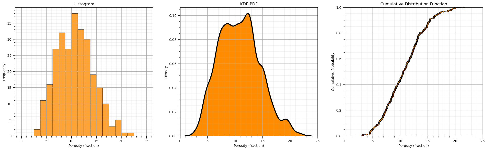

import numpy as np # ndarrays for gridded data
import pandas as pd # DataFrames for tabular data
import matplotlib.pyplot as plt # for plotting
from matplotlib.ticker import (MultipleLocator, AutoMinorLocator) # control of axes ticks
import seaborn as sns # advanced plotting
def add_grid():
plt.gca().grid(True, which='major',linewidth = 1.0); plt.gca().grid(True, which='minor',linewidth = 0.2) # add y grids
plt.gca().tick_params(which='major',length=7); plt.gca().tick_params(which='minor', length=4)
plt.gca().xaxis.set_minor_locator(AutoMinorLocator()); plt.gca().yaxis.set_minor_locator(AutoMinorLocator()) # turn on minor ticks
df = pd.read_csv('https://raw.githubusercontent.com/GeostatsGuy/GeoDataSets/master/spatial_nonlinear_MV_facies_v3.csv') # load data from Dr. Pyrcz's github repository
df.describe()
| Unnamed: 0 | X | Y | Por | Perm | AI | Facies | |
|---|---|---|---|---|---|---|---|
| count | 270.000000 | 270.000000 | 270.000000 | 270.000000 | 270.000000 | 270.000000 | 270.000000 |
| mean | 227.829630 | 472.537037 | 522.622222 | 10.778590 | 406.286106 | 4292.475630 | 0.785185 |
| std | 141.514802 | 288.917266 | 277.643599 | 3.665004 | 147.891654 | 433.786043 | 0.411456 |
| min | 0.000000 | 0.000000 | 9.000000 | 3.135247 | 138.238177 | 3630.239427 | 0.000000 |
| 25% | 102.250000 | 225.000000 | 309.000000 | 7.909297 | 309.663433 | 3981.691959 | 1.000000 |
| 50% | 220.500000 | 475.000000 | 525.000000 | 10.557808 | 408.150631 | 4192.107297 | 1.000000 |
| 75% | 336.000000 | 745.000000 | 769.000000 | 13.119702 | 495.549617 | 4491.224552 | 1.000000 |
| max | 499.000000 | 990.000000 | 999.000000 | 21.599413 | 798.263353 | 5701.203128 | 1.000000 |
pormin = 0.0; pormax = 25.0
plt.subplot(131)
plt.hist(df['Por'].values,alpha=0.8,color="darkorange",edgecolor="black",bins=20,range=[pormin,pormax])
plt.title('Histogram'); plt.xlabel('Porosity (fraction)'); plt.ylabel("Frequency"); add_grid()
plt.subplot(132)
sns.kdeplot(x=df['Por'],color = 'black',alpha = 1.0,linewidth=3,bw_method=0.2,fill=False,zorder=10)
sns.kdeplot(x=df['Por'],color = 'darkorange',alpha = 1.0,linewidth=3,bw_method=0.2,fill=True,zorder=1)
plt.xlim([pormin,pormax]); add_grid()
plt.title('KDE PDF'); plt.xlabel('Porosity (fraction)'); plt.ylabel("Density")
plt.subplot(133)
por = df['Por'].copy(deep = True).values # make a deep copy of the feature from the DataFrame
print('The ndarray has a shape of ' + str(por.shape) + '.')
por = np.sort(por) # sort the data in ascending order
n = por.shape[0] # get the number of data samples
cprob = np.zeros(n)
for i in range(0,n):
index = i + 1
cprob[i] = index / n # known upper tail
# cprob[i] = (index - 1)/n # known lower tail
# cprob[i] = (index - 1)/(n - 1) # known upper and lower tails
# cprob[i] = index/(n+1) # unknown tails
plt.plot(por,cprob, alpha = 0.8, c = 'black',zorder=1) # plot piecewise linear interpolation
plt.scatter(por,cprob,s = 20, alpha = 1.0, c = 'darkorange', edgecolor = 'black',zorder=2) # plot the CDF points
plt.xlim([pormin,pormax]); plt.ylim([0.0,1.0]); add_grid()
plt.xlabel("Porosity (fraction)"); plt.ylabel("Cumulative Probability"); plt.title("Cumulative Distribution Function")
plt.subplots_adjust(left=0.0, bottom=0.0, right=3.0, top=1.1, wspace=0.2, hspace=0.2); plt.show()
The ndarray has a shape of (270,).
